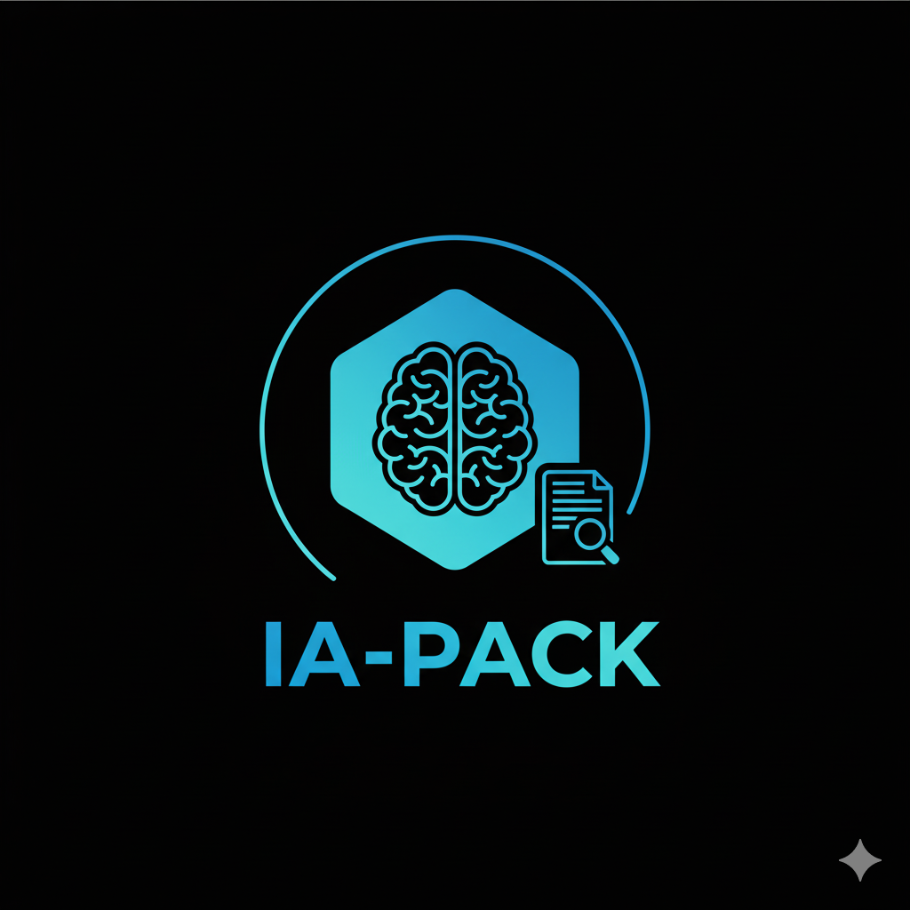

DEV-APP-UV-SPHINX documentation
Add your content using reStructuredText syntax. See the
reStructuredText
documentation for details.
PACKAGING INITIATION
{kind=link}
Sommaire
Contents:
🚀 Mon API de Démo (Promo 2026)


Bienvenue dans ce projet d’exemple. Cette application est une API développée avec FastAPI, gérée par uv pour le packaging et documentée avec Sphinx.
Website et documentation: https://devermyst.github.io/Dev-App-uv-sphinx/
Source Code (MIT): https://github.com/DeVerMyst/Dev-App-uv-sphinx
🛠️ Pré-requis
Vous devez avoir uv installé sur votre machine. Si ce n’est pas le cas :
Windows (PowerShell) :
powershell -c "irm https://astral.sh/uv/install.ps1 | iex"macOS / Linux :
curl -LsSf https://astral.sh/uv/install.sh | sh
📦 Installation (Magie uv)
Pour installer le projet, les dépendances et l’environnement virtuel en une seule commande :
uv sync
Note :
uvinstallera automatiquement la bonne version de Python si vous ne l’avez pas.
🚀 Lancement de l’API
Pour lancer l’application en mode développement (avec rechargement automatique) :
uv run uvicorn app:app --reload
L’API sera accessible sur http://127.0.0.1:8000. Vous pouvez consulter la doc interactive (Swagger) sur http://127.0.0.1:8000/docs.
🧪 Tests
Pour exécuter la suite de tests avec pytest :
uv run pytest
📚 Documentation Sphinx
La documentation est hébergée sur GitHub Pages. Pour la générer localement :
uv run sphinx-build -b html docs/source docs/build/html
Ensuite, ouvrez le fichier docs/build/html/index.html dans votre navigateur.
📂 Structure du projet
app.py: Point d’entrée de l’API.modules/: Logique métier de l’application.models/: Modèles de données (Pydantic).tests/: Tests unitaires et d’intégration.docs/: Fichiers sources de la documentation Sphinx.pyproject.toml: Configuration du projet et dépendances.